×

Transformando ideias em resultados.
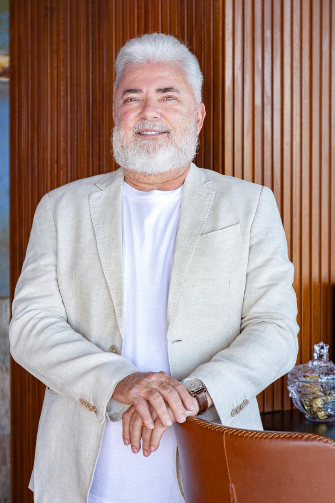
José Ricardo Marques nasceu em 8 de outubro de 1964, em Nova Friburgo, no Rio de Janeiro. Iniciou suas atividades profissionais no ramo moveleiro, primeiro em Niterói, na loja Serra Antiga. Em seguida, migrou para vendas corporativas, com atuação na Security e L'atelier.
Em 1993, aceitou o desafio de atuar em Brasília e despontou como exímio negociador junto à esfera governamental. Pela Aceco TI, destacou-se especialmente na construção de data centers seguros e segurança física de estruturas críticas.
Como Secretário de Cultura do Distrito Federal, contabilizou muitas entregas, incluindo a inauguração do Complexo Cultural da República, última obra de Oscar Niemeyer na Esplanada dos Ministérios.
Hoje está à frente da Index Participações, atuando como CVO – Chief Vision Officer, responsável por estratégias corporativas, inovação e visão institucional.
Implantou o primeiro modelo de Cidade Biossegura no Brasil, especialmente no período mais crítico da pandemia de Covid-19.
Contabilizou muitas entregas para o setor, como a inauguração do Complexo Cultural da República.
Inaugurou o arquivo do polo norte, um dos 10 fatos mais importantes do planeta naquele momento.
Reconhecido como Cidadão Honorário de Brasília, Taguatinga, São Gonçalo(RJ) e São Luís (MA)
É denominado CVO – Chief Vision Officer, responsável por desenvolver e comunicar a visão de empresas reunidas dentro da Index.
Fundou o instituto do maior carnavalesco da história, promovendo a cultura no Brasil inteiro.
1989 - 2005
Governança corporativa · Análise de inteligência de estado · Relações governamentais · Tecnologia da informação · Análise de dados
2006
Patrimônio cultural · Diversidade cultural · Artes · Governo estadual · Inteligência.
2006
Professor de administração e marketing no UNICEUB.
2016 - 2017
Gerenciamento de projetos estratégicos com implementação bem-sucedida.
2016 - 2017
Palestrante por cerca de 1 mes na convenção Rotary internacional.
2009 - atual
Presidente do Instituto Joãosinho Trinta.
2019 - atual
CVO - Chief Visionary Officer , que significa: executivo de visão de negócios e conselheiro de negócios.
atual
Relações intergovernamentais, estratégia comercial e marketing institucional e de impacto.
Faculdade Brasileira de Ciências Jurídicas, 1993
UPIS
IDP
HUB
FGV
INSEAD
Primo
G4 Education
BoardAcademy
Acompanhe as notícias relacionadas à José Ricardo Marques
Uma análise técnica e institucional sobre o primeiro turno das eleições, o novo cenário político, o Congresso, o Supremo Tribunal Federal e os desafios para o próximo ciclo.
Leia mais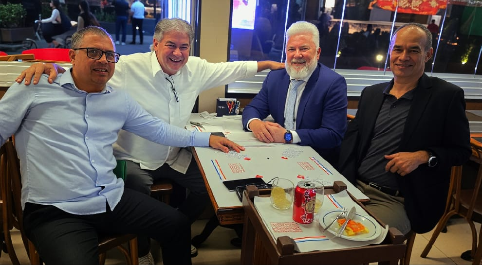
O empresário e especialista em biossegurança esteve na sede histórica do Botafogo, em General Severiano, onde foi recebido pelo presidente do Master Botafogo, Júlio Costa, dando início a uma aproximação institucional voltada ao esporte, à saúde e à responsabilidade social.
Leia mais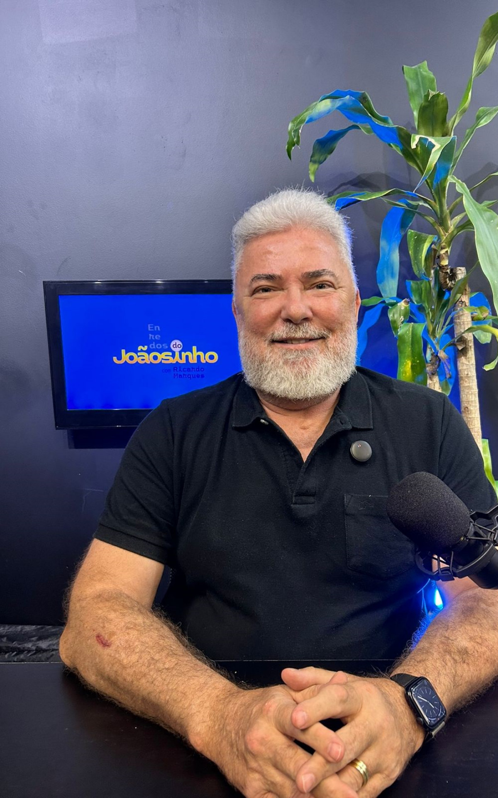
Index Participações e RM Advogados Associados lançam projeto integrado de inteligência de negócios, governança e compliance para ampliar a competitividade das empresas.
Leia mais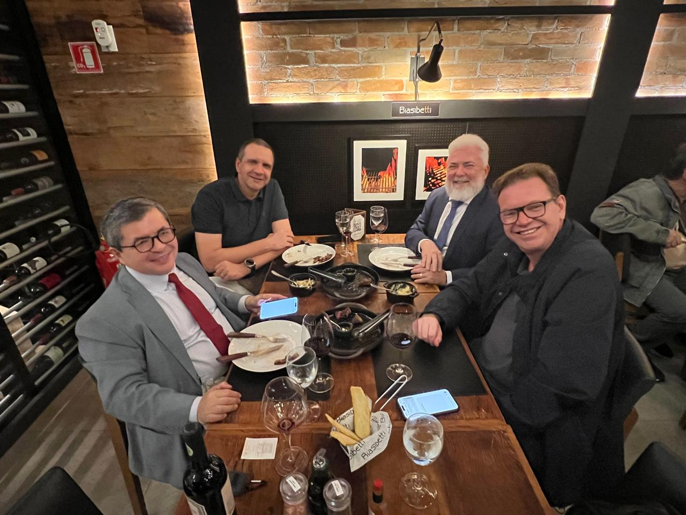
Confraternização de lideranças em Niterói reuniu desembargadores, empresários e o fundador da SASBIO, Ricardo Marques, em uma noite de diálogo e parcerias estratégicas.
Leia mais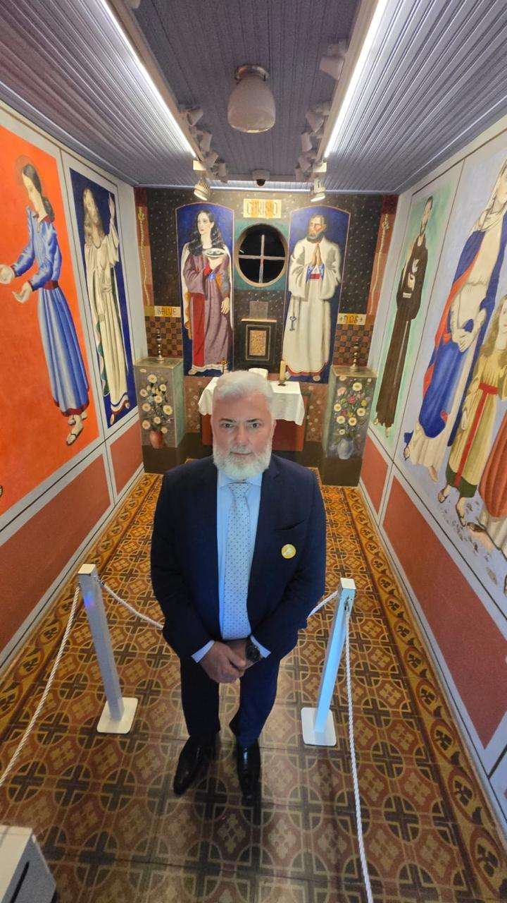
No Museu Casa de Portinari, a arte que conta histórias reais de luta, esperança e dignidade do povo brasileiro.
Leia maisComo Diretor do Arquivo Nacional, participei da inauguração do Arctic World Archive, em Svalbard, onde a história do Brasil foi incluída para as futuras gerações.
Leia mais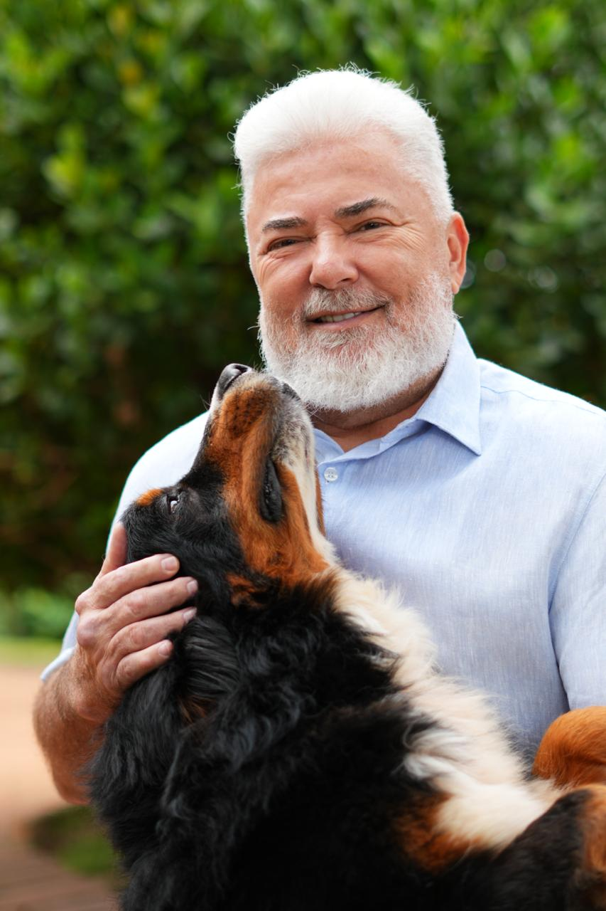
Uma homenagem ao gigante gentil que marcou uma família com amor, lealdade e memórias inesquecíveis.
Leia mais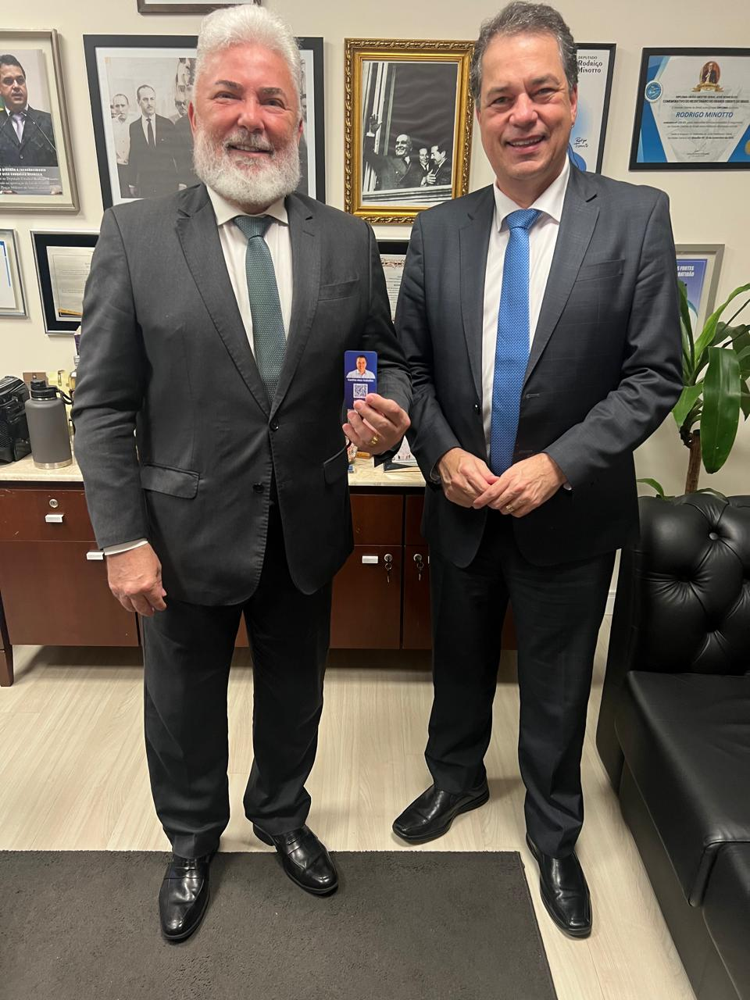
Santa Catarina consolidou-se como um dos estados mais desenvolvidos do Brasil, destacando-se pela força de sua indústria, pela excelência de seus serviços, pela vocação turística e pela elevada qualidade de vida oferecida à sua população.
Leia mais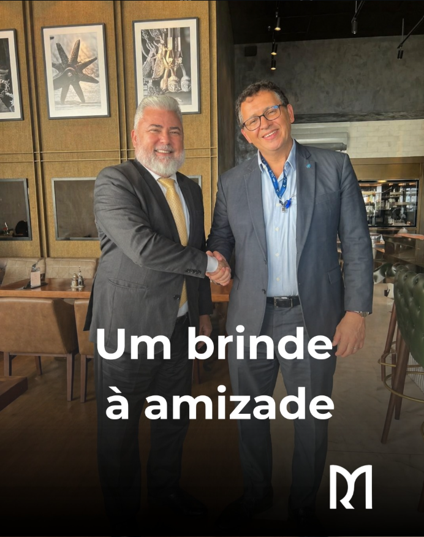
Uma homenagem à amizade, à admiração e às conexões verdadeiras que se sustentam ao longo do tempo.
Leia maisQuando Joãosinho Trinta afirmava que o desfile das escolas de samba era uma “ópera de rua”, ele não falava apenas de plumas e paetês. Falava de drama, de conflito, de redenção, de pecado e de glória. Falava de povo. E, sobretudo, de energia — essa força invisível que transforma miséria em metáfora e dor em enredo.
Leia mais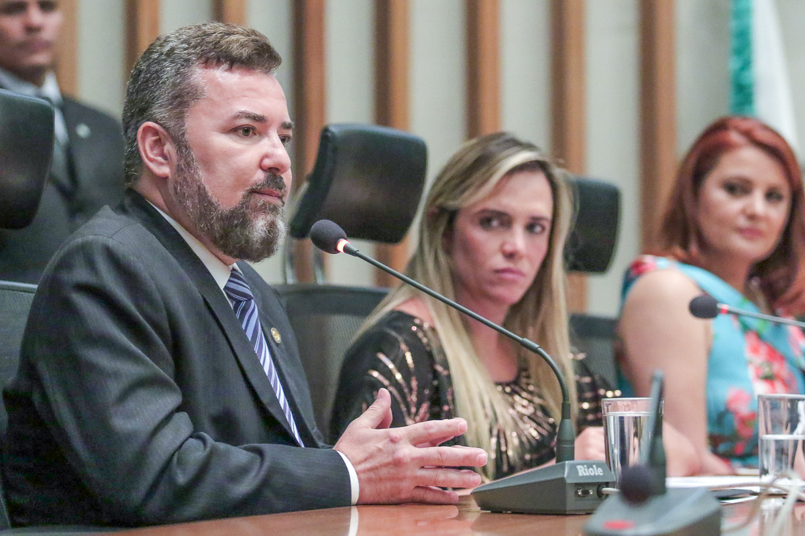
Por iniciativa da presidente da Câmara Legislativa, deputada Celina Leão (PDT), o empresário e ex-secretário de Cultura do Distrito Federal, José Ricardo Marques, recebeu, na noite desta quarta-feira (7), o título de Cidadão Honorário de Brasília.
Leia mais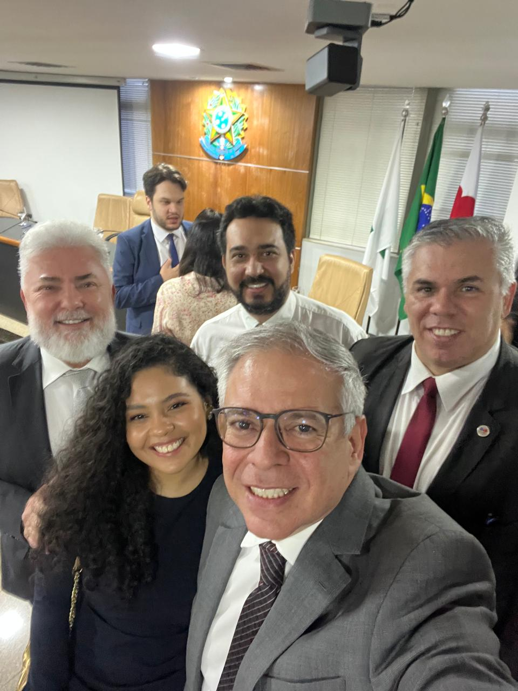
A Ordem dos Advogados do Brasil Seccional Distrito Federal (OAB/DF) promoveu, nesta semana, um encontro com mais de 110 presidentes das Comissões Temáticas para apresentar o balanço das atividades de 2025.
Leia mais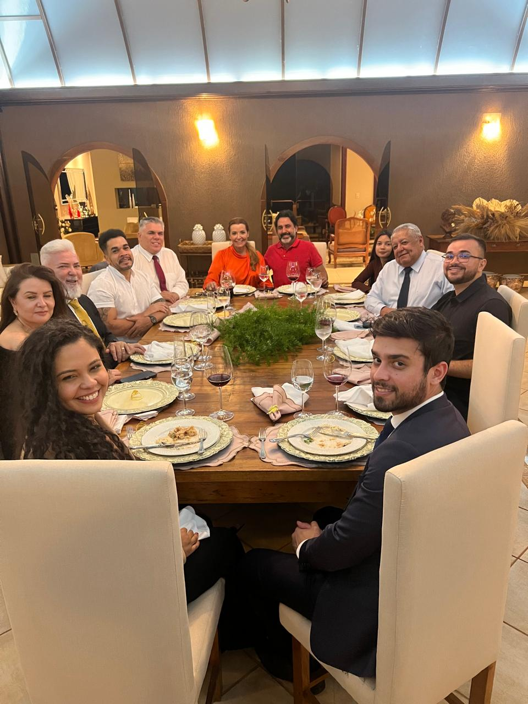
Ricardo Marques, advogado, presidente da Comissão da Advocacia do Futuro da OAB/DF, recebeu em sua residência, ao lado de sua esposa Simone Azevedo, presidentes e representantes de diversas comissões temáticas da Ordem no Distrito Federal para um jantar marcado por diálogo qualificado e articulação institucional.
Leia mais
O Instituto Joãosinho Trinta (IJT), referência em inclusão e democratização do setor cultural, agora presta consultoria estratégica para a cidade de São Gonçalo.
Leia mais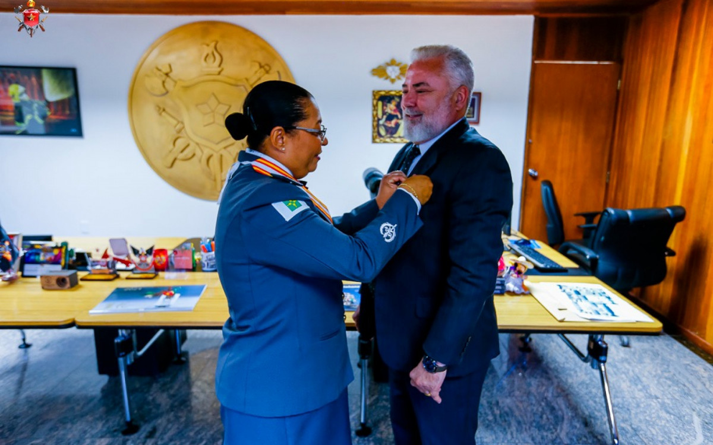
José Ricardo Marques recebeu homenagem no gabinete da Comandante-Geral do CBMDF, Monica de Mesquita Miranda
Leia mais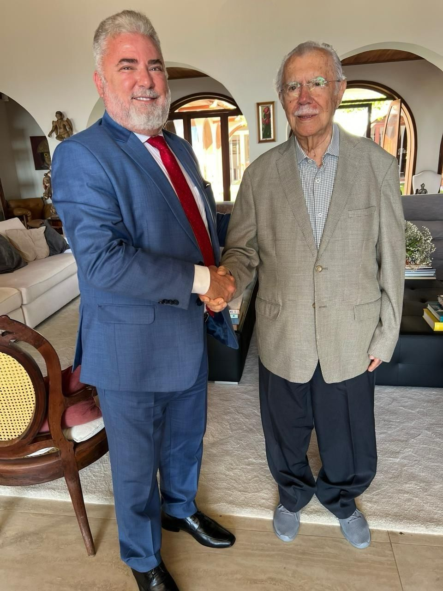
O consultor foi recebido por Sarney e sua filha, a ex-Governadora do Maranhão, Roseana Sarney
Leia mais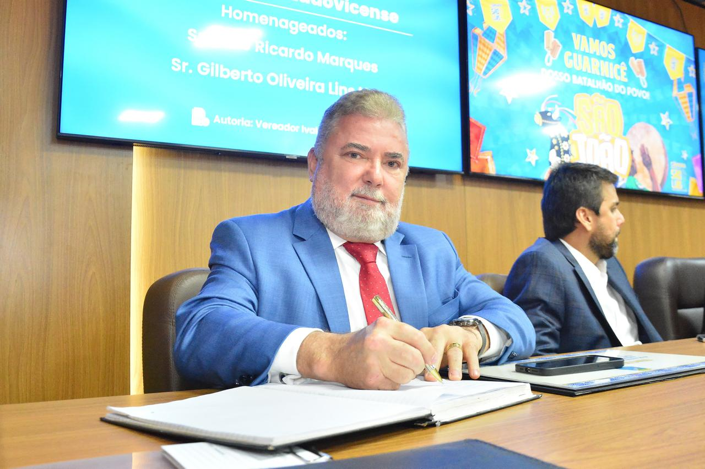
A Câmara Municipal de São Luís concedeu o título de cidadão ludovicense ao carioca José Ricardo Marques e ao baiano Gilberto Oliveira Lins Neto.
Leia mais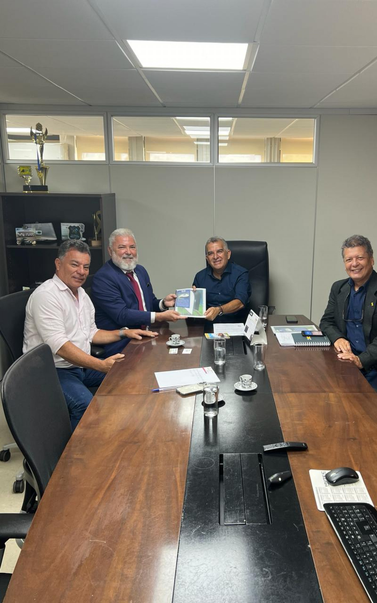
Presidente do Instituto Joaosinho Trinta, José Ricardo Marques, participou de encontro
Leia mais